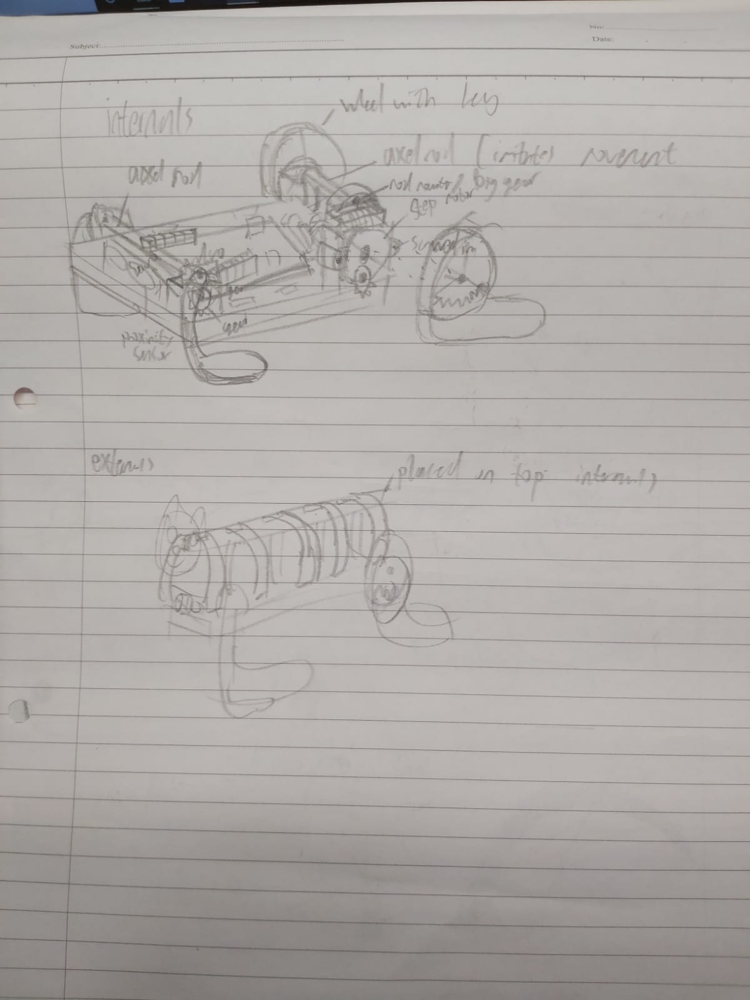

EP1000
Project
I will be documenting the whole project from start to finish, including my comments, thought process and what could have been possibly done better.
I had an idea
An ambitious idea
I wanted to make something like a toy that could walk like an animal
with a rough idea in my brain, i went to do some rudementary research
Research phase
I watched a few videos about how people have designed walking robots
I was in awe about how well designed they were, and the concept of a mechanical creation, something potrayed to be so stiff, moving so fluidly almost like an animal. Struck a chord with me
The concept of biomimicry; which is when designers take inspiration from creatures from our natural world, who have evolved over millions of years to adapt for a purpose, and apply them into their designs. An example would be the B2 bomber plane, taking inspiration from one of natures fastest animals, which is the falcon, so as to copy how the falcon can minimise its air resistance, and as such, make itself faster.
there was a video i saw, where a robot ran at the speed of 28km an hour on legs made to resemble a cheetah. The video was posted close to 8 years ago, so i couldnt imagine how far technology has progressed since then

So i decided to base my design off the one shown in the video above
I did abit more basic research and learnt the ideal CG for a quadraped body, which is in the middle, i wasnt sure if i could design something with a precise CG, but i would try to implement that.
Animal legs have more joints than humans, in the case of a dog it has 3 joints and it walks on its toes, it is able to do that because it is a quadraped, with 4 legs to support its weight.
However, i thought that was too confusing to design for me, and i tossed that idea out of the window. This is a decision i would come to regret later, and definitely contributed to the downfall of my product
Concept Sketching
I had all these ideas and requirements, so i started to sketch down my ideas
This was my first sketch, its extremely messy, but the general idea was to have something that would crawl around
I had planned to use a rack and pinion system at first, but i changed ideas after watching a video.
i decided to use an axel rod to transmit motion from one leg, to the other leg on the other side
i had also decided to use a inside gear as i felt that a spinning motion in the legs would be more likely to generate more back thrust for the body, as compared to a rack and pinion, which might have actually dragged the body backwards due to the increased friction from the larger surface area contact with the floor
heres another sketch i did for this new idea
see the similarity in mechanisms?
at that point, i wanted to use 1 stepper motor and 1 servo
\3D design
I spent alot of time doing the first draft

i measured the size of the servos i was going to use so i could get an accurate representation of how this product was going to turn out, also it was important as i needed to ensure the gears would mesh,hence it needed to be in the same center line, and the distance needed to within the two gears pitch circle for both gears to mesh.
I wasnt quite satisfied with this model, but i needed to show my teacher something so as to get his input on what to do next
This design still uses a stepper motor for the back leg, that was the orignal idea before i switched to 2 servo motors.
First Feedback from teacher
He told me to straighten the front legs more and to curve the back legs more
So keeping his advice in mind, i then moved forward to design the next version

This design utilizes more curved legs, this serves the purpose of getting more pushing power because of the shape, while hopefully still maintaining enough contact with the ground to stand stably
In order to spice up the aesthetic, i added a rib cage, and a bear head.I also cut engravings into the parts so as to get a sort of "Runic" and "vintage" toy bear feel.
This was actually ver 11 fyi
Programming
One of the challenges i faced for programming was that i needed to find way to replicate how an animal ran
So i fired up tinkercad and got to work
i referenced my running motion off this gif of a cheetah running

This was my circuit design in the end

The way it will move is that, the front legs will move backwards first, followed by the back legs moving forwards, then the front legs will move back infront again, while the back legs moves backwards and pushes the bear along.
I acheived this by alternating both servos 4 times each, both servos takes turns to move forwards and backwards in an alternating manner.
i also added a potentiometer, this will help me to control the speed in which the bear moves as it will reduce or increase the amount of time taken for the servo to rotate